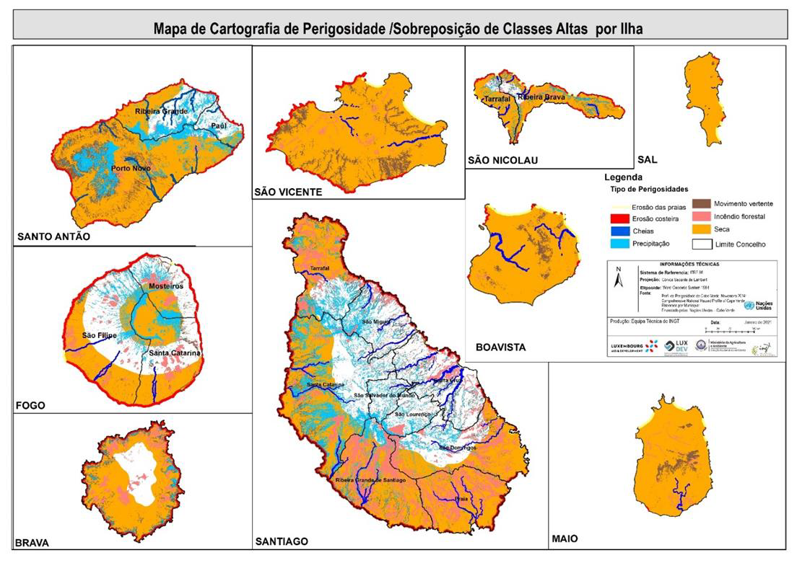
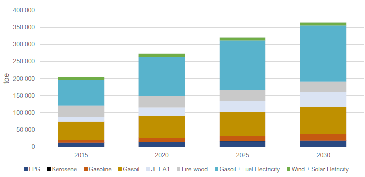
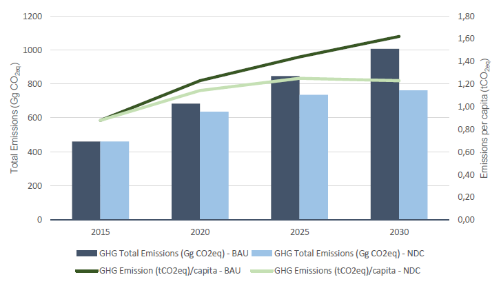
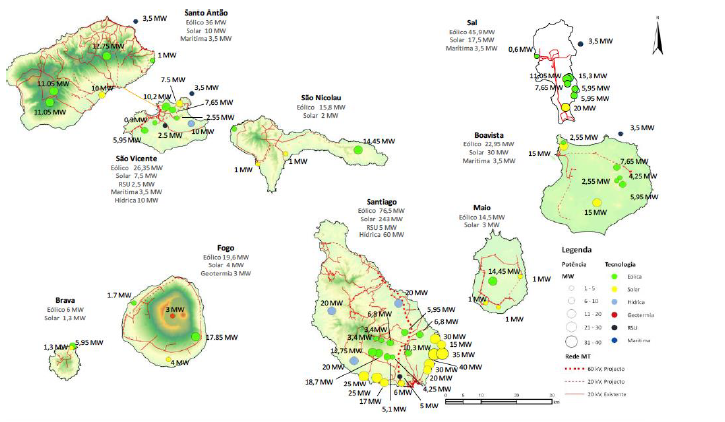
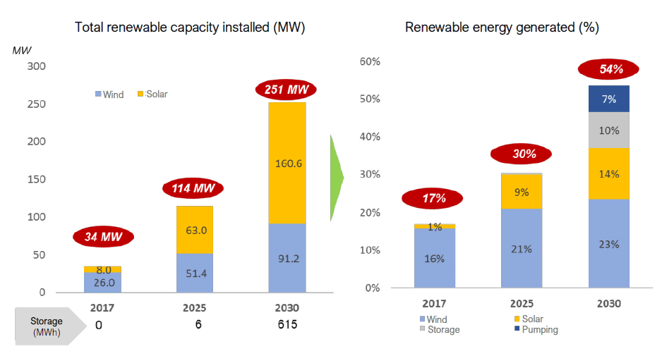
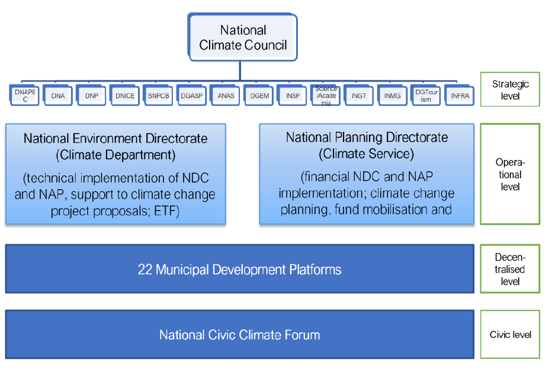

Praia, February 2021
This NDC report has been produced with the support of the “international climate finance” from the Government of Luxembourg.
This NDC update has been possible thanks to the collaboration of the following international institutions:
Climate change and the threat they pose to the balance and future of the Planet are one of the biggest problems facing humanity today. Indeed, global warming, caused mainly by large greenhouse gas (GHG) emissions, thawing and retreating glaciers, rising sea levels, coastal erosion and increasing frequency and intensity of meteorological events and extreme weather are part of the scientific evidence and tend to get worse.
Cabo Verde, like other Small Island Developing States (SIDS), contributes insignificantly to global warming. However, due to the fragility of their ecosystems, it is among the countries that suffer most from the consequences of this phenomenon: increased climatic aridity and the frequency of droughts, worsening saline intrusion and deterioration of groundwater, soil degradation and loss of biodiversity, increase frequency of storms and hurricanes, among others. Due to the smallness and weaknesses of its economy, it is also characterized by the weak capacity to replace the damage caused by catastrophes resulting from extreme weather and climatic events.
We are, therefore, at the forefront of those who call for the strengthening of Climate Action in the world and the strong solidarity between countries, deserving special attention from SIDS. On behalf of the Government of Cabo Verde, I reaffirm our country's will and commitment to do everything to assume our responsibilities under the Paris Agreement. With this first update of our Nationally Determined Contribution (NDC), we commit to decarbonizing our economy, strengthening the country's resilience and adapting the sectors of human activity to the harmful effects of climate change. This commitment stems from the policies and strategies adopted for the sustainable development of our islands and constitutes our country's contribution to global efforts to reduce emissions and limit the increase in global average temperatures to 1.5 ° C above pre-industrial levels.
In practical terms, there are 14 specific contributions until 2030 (5 for Mitigation and 9 for Adaptation), which will translate into a reduction in our emissions by at least 20%, that is, from 200,000 to 280,000 tCO2eq, annually. For the implementation of these contributions, more than one hundred measures were identified, whose lasting impact of adaptation will also be felt in food security, water security, energy security and the resilience of the economic and social sectors. More than half of the electricity will come from local renewable sources, mobility will be low carbon, through the promotion of electric vehicles, especially in public transport, most of the seawater desalination facilities will start to work with wind and solar energy. We will adopt the best knowledge and practices in the management of natural resources and in Agriculture, sharing our experience with other countries.
This NDC update is an ambitious and realistic commitment, confirming our firm determination to achieve a fair transition to sustainable, carbon-neutral development.
This is in line with Cabo Verde's sustainable development objectives and with national and sectoral programs, plans and strategies, on the one hand, and with the objectives of the Paris Agreement and other international agendas, including, among others, development objectives sustainable.
The document, structured in 6 chapters, addresses the reasons for updating the NDC in the context of Climate Ambition 2030, and presents Cabo Verde's concrete contributions to Mitigation and Adaptation and the perspective of climate governance for this purpose. It ends with a chapter on priorities and needs, namely in terms of international support, financing, capacity building and technology transfer.
I conclude by thanking the valuable work of so many specialists, public entities and civil society organizations, international partners and friendly countries, whose contributions allowed us to update our Nationally Determined Contribution (NDC), in the context of the Paris Agreement, in perfect alignment with the sustainable development policies and strategies of our small island and archipelagic state.
Praia, February 15, 2021.
Gilberto Correia Carvalho Silva
Minister of Agriculture and Environment
Deeply supportive of the goals and objectives of the Paris Agreement (PA), Cabo Verde puts forward an update to its first Nationally Determined Contribution (NDC) from 2015. The update deepens and moves beyond the initial set of actions and commitments with respect to scope, sector ambition, balancing of mitigation and adaptation action, climate justice and gender equality, as well as transparency and governance.
With 14 contributions and more than hundred measures planned, Cabo Verde seeks to achieve a substantial mitigation benefit – in the order of 180,000 tCO2eq. to 242,000 tCO2eq annually by 2030 – as well as a lasting adaptation impact in terms of food, water and energy security for Cabo Verde and improved resilience across communities.
Although Cabo Verde's population compares well with other countries in Africa in terms of access to energy, water and education, the pandemic has shown that economic and health emergencies are exacerbated by the triple crisis of resources scarcity, climate change and biodiversity loss, particularly for Cabo Verde's rural society.
The NDC firmly responds to the development objectives of Cabo Verde’s Ambição 2030 (Ambition Plan 2030).
Cabo Verde’s flagship contributions include:
To ensure robust implementation in line with the Enhanced Transparency Framework (ETF) established under the Paris Agreement, Cabo Verde will enact dedicated legislation covering comprehensive monitoring, reporting and evaluation of GHG data, mitigation action as well as adaptation action, and defining a cross-institutional climate governance framework.
While mobilising substantial domestic funding, Cabo Verde will rely on international support – technological, capacity-building and finance – to achieve its 2030 contributions. The Cabo Verde Government will adopt a Climate Finance Strategy and Roadmap by 2022 to establish and prioritise how best to incentivise domestic investments and how to direct funding from international public, private and philanthropic sources for use in different project preparation and financing stages.
Cabo Verde supports the use of all of the enhanced ambition instruments under Art. 6 of the Paris Agreement, focusing on energy and mobility under the provision on cooperative approaches (Art. 6.2 Paris Agreement) and on targeting adaptation benefits for rural communities (food and water security and healthy soils) as well as interventions on sustainable tourism and blue habitats (ecosystem services from coastal wetlands and marine resources) under the non-market approaches provision (Art. 6.8 Paris Agreement).
| Box 1: List of NDC measures and their estimated* international funding needs for implementation 2020-2030 |
|---|
| 5 Mitigation Contributions 1 000 Mio Euro |
| #1: Reducing energy intensity and fostering energy efficiency |
| #2: Increasing renewable energy targets |
| # 3: Lowering the carbon intensity of mobility |
| # 4: Shifting towards responsible tourism and circular economy |
| # 5: Fostering the natural sink function of ecosystems |
| 9 Adaptation Contributions 1 000 Mio Euro |
| #1: Improving water security and natural replenishment while reducing water carbon intensity |
| #2: Enhancing sewage, solid waste and wastewater treatment |
| #3: Increasing and sustaining land-based food security through regenerative agriculture |
| #4: Increasing and sustaining ocean-based food security through regenerative fishing |
| #5: Extending marine protected areas |
| #6: Defending marine resources and coastal zones |
| #7: Using spatial planning as an ally in climate change mitigation and adaptation |
| #8: Mitigating climate related disaster risks and vulnerabilities |
| #9: Confronting climate related health risks |
| Total estimated funding needs for NDC 2020-2030 2 000 Mio Euro |
*to be confirmed and detailed in the upcoming NDC Implementation Road Map 2021
Located some 620 km off the west coast of Africa, Cabo Verde is an archipelago of ten islands of which nine are inhabited. Despite the arid climate and mountainous terrain, Cabo Verde has been developing rapidly, in a large part thanks to its flourishing tourism industry, graduating from a least developed to a middle-income country in 2007.
As a small island development state (SIDS), Cabo Verde, a very small emitter of GHG emissions at a per capita rate of just under 1 tCO2eq, is disproportionately vulnerable to external economic shocks and extreme climatic events that can instantly erase years, if not decades of development gains.
Cabo Verde is also facing significant capacity constraints, limited fiscal space and insufficient domestic finance to respond adequately to challenges posed by climate change. This has been compounded by the economic fallout of the COVID 19 global pandemic and exacerbating the already existing high debt to GDP ratio. Although Cabo Verde has made remarkable progress in poverty reduction over the last decade, poverty remains widespread (35% of the population as recently as 2015, INE 2019). The COVID 19 pandemic has caused the biggest recession in Cabo Verde’s modern history affecting virtually all economic sectors, including notably tourism, which is of strategic importance. Current macro-fiscal indicators are provided in Table 1 below.
Table 1: Main macro-fiscal indicators in Cabo Verde (% change each time compared to previous year)
| Indicators | Units | 2019 | 2020P* | 2021P | ||
|---|---|---|---|---|---|---|
| Base | COVID Scenario | Base | COVID Scenario | |||
| GDP | Variation in % | 5.7 | 5.5 | - 6.8 | 5.5 | 4.5 |
| Inflation | 1.1 | 1.2 | 1.0 | 1.2 | 1.2 | |
| Number of tourists | Variation in % | 7.0 | 6.6 | - 58.8 | 7.4 | 35 |
| Unemployment rate | In % of active population | 11.3 | 11.4 | 19.2 | 10.7 | 17.2 |
| Public Deficit | In % GDP | - 1.8 | - 1.7 | - 11.4 | - 1.4 | - 9.7 |
| Public Debt | In % GDP | 124.2 | 118.5 | 145.8 | 113.3 | 148.1 |
Source: Fonte: SPAME/DNP (2020), * P = predictions
Pre-pandemic statistical data shows a country whose population doubled since Independence in 1975, to count 544,000 inhabitants in 2018, with an estimated increase to 620,000 inhabitants in 2030, a scenario that presents opportunities and challenges. While requiring massive efforts at all levels of society, the coming years will be dedicated to rebuilding the economy not just as it was, but more resilient, fairer and better.
Cabo Verde, an African model of democracy, stability and share of the population with access to education (93% enrolment 2018), water (86%, 2018)1 and electricity (92.2%, 2019)2 and has made the Sustainable Development Goals (SDGs) the backbone of its economic, social and cultural planning.
While national efforts are underway and will continue to be exerted toward emissions reduction and building resilience, Cabo Verde’s national efforts alone will not be sufficient for achieving the goals of the NDC in mitigation and adaptation and in securing the long-term sustainable development and decarbonisation of Cabo Verde.
The pandemic has exposed the extreme fragility of economies and development gains in tourism-based importdependent SIDS, such as Cabo Verde.
An archipelago of ten volcanic islands with no permanent water courses, no natural forests, limited mineral resources and scarce in areas suitable for agriculture (only 12% of its territory is arable land), Cabo Verde is particularly exposed to increasingly extreme weather events, desertification of land and persistent droughts, occasional but severe and highly damaging heavy rains (most recently in September 2020), and sea-level rise.
As a consequence, the archipelgo faces severe adaptation challenges associated with, among others, water resource scarcity, food and energy security.
The access to affordable and sustainably-sourced energy and water, the protection of the islands’ delicate unique biodiversity and soils, sustainable development and the deployment of socio-ecological resilience within the planetary boundaries are a matter not just of policy choice but of survival.
In Cabo Verde, since 1990, temperature increase by 0.04%/year. Recent projections indicate a temperature increase of about 1°C for the period 2011-2040 and of 3°C until the end of the century. Results also show a reduction in annual average precipitation of about 2%, a temporal extension of the dry season, with an increased likelihood of droughts, and a shortening of the rainy season, with a concentration of heavy, localised rains in a short period of time, causing high water discharge and run-off and soil erosion.
Figure 1: Climate indicators for the period 2011-2040
Source: WMO, MAA, GCF, 20193
Already today, Cabo Verdeans have to adapt to ever-longer drought periods, storms, soil erosion, salt intrusion and increased desertification. For the country’s high exposure to natural hazards, see Table 2 below.
Table 2: Disaster Risk Profile of Cabo Verde

Source: World Bank -Global Facility for Disaster Risk Reduction and Recovery, 2019
The situation is made more difficult by the country’s relatively small size in terms of territorial boundaries, demographics and the economy, as well as its geographic isolation. While Cabo Verde’s islands are in no way self-sufficient – the vast majority of goods, including essential foods, are imported. People are exceedingly vulnerable to shocks in supply chains caused by economic or digital disruptions, extreme weather events, or most recently the COVID 19 pandemic.
As concerns specifically climate hazards (see figure 2 below), the most damaging to Cabo Verde are estimated to be drougts, floods, land slides, forest fires, sea-level rise, coast and beach erosion and epidemics. To this add the non-climate related hazards such as volcanic and seismic activities. From a territorial perspective, research concludes that about 80% of the archipelago's territory has a high susceptibility to drought, especially the shallow islands and São Vicente.
The defintition of vulnerable groups in the face of climate change as well as the connections between gender and climate policy and planning are not yet sufficiently established or institutionalised in Cabo Verde. The highest climate change vulnerability tend to lie with the cities, the shallow islands, the steep agricultural and forest areas, the coast lines. Population and assets are concentrated in coastal cities. Considering Cabo Verde’s small and dispersed geographic area, disasters can take country-wide proportions.
Figure 2: Map of the susceptibility to selected climate hazards in a high risk scenario, per island, 2014/2021

Source: Methodological pilote study for the production of a climate hotspots map, INGT/DNA, 2021 and Comprehensive Hazard Assessment and Mapping in Cabo Verde, UN Joint Office and Government of Cabo Verde, 2014. The documented climate hazards are: beach and coast erosion (erasão das praias e erosão costeira, yellow and red resp.), floods (cheias, dark blue), heavy rains (precipitação, light blue), land slides (movimento vertente, brown), forest fires (incendio florestal, pink), droughts (seca, orange). In black, the names of the islands, and the names and administrative limits of the 22 municipalities.
Since Cabo Verde’s ratification of the UN Framework Convention on Climate Change (UNFCCC) in 1995, these climate vulnerabilities have been studied and are being monitored. Although limited in ressources, the Government has since spared no efforts to reduce the Nation’s overall vulnerabilities and exposure to disaster and to cope with climate change, as can be seen by the following selection of milestone documents produced under the auspices of the Ministry of Agriculture and Environment:
The Government has also undertaken efforts to reduce its carbon dependence and shift its energy generation from fossil to renewable sources, as will be exposed in the following pages. This stems from the fact that the country is endowed with a high potencial for exploiting renewable energies (see Figure 3 below). Disposing of a comprehensive network of terrestrial and maritime protected areas and biosphere reserves, the country also aims to mobilise its potencial for sequestring carbon naturally, in its ocean, forests, wetlands and soils.
Figure 3: Map of areas potentially reducing GHG emissions through deployment of renewable energies and through natural carbon sequestration in vegetative cover and protected areas, per islands, 2021.

Source: Methodological pilote study for the design of a climate hotspots map, INGT/DNA, 2021. ZDER = special zone for the development of renewable energies (RE). The documented areas with GHG reduction potential are: Praia, São Vicente, Sal and Boavista municipalities with the deployment of electric vehicles, the CERMI - Centre for Renewable Energies and Industrial Maintenance, and the ZDER for solid urban waste (RSU); Brava and Maio with 2 solar desalination plants under development; the terrestrial and maritime protected areas, the vegetative cover on all islands but Sal. All islands have ZDER for either geothermal (red), ocean (light blue), wind (light green), hydro (Dark blue), solide waste (violet) or solar (yellow) energies. In black, the names of the islands, and the names and administrative limits of the 22 municipalities. For more details on the RE potential in MW per island see fig. 7.
Box 2: Main climate related vulnerabilities of communities in Cabo Verde
Agriculture: Agricultural output, always precarious given soils and precipitation conditions, is exceedingly sensitive to a warming climate and increasingly unpredictable rain patterns frequently in torrential way. The sector employs some 15% of the population and is responsible for local food supply. While soils are naturally fertile due to their volcanic origin, fertility has been decreasing over time due to water and wind erosion, salt intrusion, weak vegetative cover and continuous use without proper replenishment of nutrients extracted by crops. Invasive species and plagues increase agriculture vulnerability. The sector that resisted best to the pandemic was the agriculture. Local food production continued;
Food imports: For more than 80% of their needs, Cabo Verdeans are dependent on imports of essential food; any disruptions for shipping, commodity supply, fluctuating international food commodity prices; and currency risks will have disproportionate consequences for Cabo Verde’s food security and distribution and the capacity to meet basic needs;
Energy: Fossil fuel imports and logistics: While Cabo Verde is dependent on imports for virtually all its fossil fuel needs, the energy mix still heavily relies on them from transport to desalination to generator use whether in agriculture or in the health (hospital) system; disruptions to supply and prices – a likely prospect in a world more and more impacted by climate change and vanishing resources – are felt immediately and across communities. Linking Cabo Verde’s islands with each other and with other countries – a challenge at the best of times – is extremely vulnerable to disruptions from climate change, pandemics, fossil fuel scarcity. Renewable generation is key, but these installations too have to be made climate-resilient (larger ports for reception of ever larger wind generators, batteries waste, extreme winds or no wind, bruma seca, corrosion of photovolataic panels);
Water: Cabo Verde increasingly suffers from water shortage. The country must operate ever more desalination plants to meet its increasing water needs; yet those plants run heavy on energy use (10% of all the electricity consumed in the country);
Urbanisation and Infrastructure: Urban sprawl – often unplanned – has diminished habitats and essential ecosystem services. Recurrent droughts and worsening conditions in agriculture and fisheries have driven rural population into cities and the tourism employment or into exodus. It has also created massive challenges for the country’s essential infrastructure (transportation, energy,water and sewage facilities, communications infrastructures in particular), which are further exposed by climate hazards. Buidling in a more resilient, with lower land- and energy footprints, while keeping up with the housing supply and prices, is the challenge;
Sea-level rise: The geomorphological characteristics of Cabo Verde’s islands define a set of landscapes, where lowlands in the coast stand out; this makes coastal communities, economic operations and infrastructure particularly vulnerable to a possible rise in sea level associated with extreme and adverse climate events, as are cases of storms with high winds, heavy rains and tidal waves; the country is already witnessing loss of coastal territory due to these phenomena;
Public health: COVID 19 has put Cabo Verde’s public health system and finances under enormous stress. While the relationship between climate change, biodiversity and infectious disease is complex, it is clear that the loss and degradation of natural habitats undermines the web of life and increases the risk of disease spillover from wildlife to people. The country’s record on combatting a range of infectious diseases such as cholera, Zika, dengue as well as yellow fever, and malaria is exceptional. Nevertheless, Cabo Verde is less prepared than other countries to withstand future epidemic and pandemic outbreaks, not least for its high exposure to international visitors, on whom the current economy depends;
Vulnerable groups can generally be defined as groups of individuals exposed to poverty, or low-income individuals. Climate vulnerable groups considers groups and communities that have adversely been affected by climate hazards, and having limited ability and income to recover by themselves. This would include women, the elderly and the youth or persons with disabilities. Women are responsible for the day-to-day running of households and basic services, mainly in rural areas. They suffer from the lack of (or limited) access to water, land and energy in rural areas and increasing fragility in supply chains. Women and youth are underrepresented in decision making bodies, overrepresented in unemployment and emigration and have lesser patrimonial or financial resources;
Digital threats: As an island state, Cabo Verde is hyper-dependent on swift, steady and 24/7 available digital and satellite services feeding needs from education to transport to early-warning systems. Extreme weather events can have seriously debilitating impacts on societal and security-related functions;
Financial resilience: Cabo Verde is both considerably indebted and highly dependent on non-domestic financing and foreign direct investment. Increasing vulnerability to and costs of climate change escalate financial exposure and affects the financial resilience of the country.
Cabo Verde follows the IPCC definition, describing resilience as “the ability of a social or ecological system to absorb disturbances while retaining the same basic structure and ways of functioning, the capacity for selforganisation and the capacity to adapt to stress and change.”
Cabo Verde’s Disaster Risk Reduction Strategy (2018) defines “resilient communities as the populations and human settlements informed about the risks, aware and able to anticipate, prevent, prepare, face and recover from disasters; competent communities, capable of leading and taking risk reduction initiatives at local and community level; societies capable of organising cooperation within neighbourhoods and communities, of reinforcing self-help and of encouraging solidarity and mutual support, of cultivating disaster preparedness.”
Addressing these vulnerabilities is a key national interest of Cabo Verde and lead element of Cabo Verde’s climate ambition. Building resilience is a task that touches on economic, social and environmental aspects all at once. Cabo Verde needs a resilient infrastructure that reaches all of its people with energy, clean water, basic health, emergency and education services. Cabo Verde needs affordable public services; that includes energy and water bills. While social rebates for poor households are available, costs for water and energy for Cabo Verde´s families are still high. Cabo Verde needs land and agriculture management that is responsive to and copes with diminishing precipitation, occasional and severe flooding, and increased soil and biodiversity erosion. Cabo Verde needs state-of-the-art emergency plans to manage shocks and crisis ranging from weather events to new pandemics, cyber-attacks, infrastructure collapse, and supply chain interruptions. Finally, Cabo Verde needs inclusive and gender-sensitive strategies to enhance the adaptative capacity of all of its communities and economic sectors, including food production and tourism.
Building resilience is not a one-off challenge but requires continuous efforts on planning, screening risks and performance, developing response measures, and working together across communities and institutions.
Cabo Verde has one of the lowest GHG emissions per capita in the world (0.99 tCO2eq/inhabitant in 2010), the burning of fossil fuels in electricity generation and combustion accounting for about 90% of total emissions. The comparably low carbon footprint aside, Cabo Verde has consistently worked towards transforming its economy from fossil to renewable energy (RE) sources. Under its first NDC, Cabo Verde spelled out a number of sectorwide and sub-sector-wide targets (RE penetration rates into the electric grid; reduction of cross-sectoral energydemand; access to energy) while also committing to action-based targets (focusing on improvements of the country’s nine electricity grids, hardware installation, planning tools, and other ‘soft’ measures such as educational programs). While a number of contributions have yet to come to fruition – the first NDC had a time horizon until 2030 – several key milestones have been reached, especially concerning the creation of renewablefriendly regulatory and investment framework.
Regarding the evolution of GHG emissions and removals in Cabo Verde between 1995 and 2010 by sectors listed, the energy sector has contributed most to total emissions, reaching approximately 550 Gg of CO2eq in 2005, the highest value of the series listed. In 2010, emissions had decreased by 1.2% compared to 2005. The Agriculture, Forestry and Other Land Use (AFOLU) sector, more specifically forestry, in 2005 and 2010 contributed to the net removal of CO2, at the tune of -238 Gg CO2 in 2005 and in -237 Gg CO2 in 2010, corresponding to a decrease of 0.25% in 2010 relative to 2005.
In 2005, the transport subsector accounted for 55% of total CO2 emissions in the energy sector, followed by the energy industries subsector with 33%. In 2010, the subsector energy industries accounted for 55% of total CO2 emissions in the energy sector and transport accounted for 41% of total CO2 emissions in this sector. The transport sub-sector decreased by 27% of total CO2 emissions compared to 2005, due mainly to the reduction in the number of domestic flights in Cabo Verde.
This said, emissions are expected to rise, in line with growing demand for energy and assuming business-asusual (BAU) conditions (from energy mix as of 2019). The general energy demand in 2030 is calculated to reach approximately 363,836 toe, from an annual of 222,928 toe in 2019 (the impact from COVID 19 not yet taken into account).
Graphic 1: Total Energy demand: 2015, 2020, 2025, 2030 – Projected BAU Scenario (toe)

Source: DNICE (2020)
Emissions in energy demand (outside electricity) are expected to reach 500 kt CO2eq in 2030. Among the various subsectors, the transport sector presents the highest GHG emissions over the years, averaging approximately 373 kt CO2eq/ year between 2020 and 2030. By 2030 the transport sector is estimated to produce 440 kt CO2eq.
Emissions also increase in the energy transformation category (electricity generation) from 280,320 tCO2eq. in 2015 to 507,000 tCO2eq in 2030 (not yet adjusted for the COVID 19 pandemic).
In domestic energy, according to INE, in 2019, the most consumed fuel in urban areas is gas, around 81.2% of households, mainly in urban areas (93.2%), followed by firewood with 16.1%, particularly in rural areas (43.4%). The municipalities of Santiago, with the exception of Praia, register the highest consumption of firewood as a source of energy for cooking. By islands, the largest demand for firewood is concentrated on the island of Santiago, representing about 50% of the national demand. About 20% of households use wood as the main energy source for cooking. The vast majority (85%) of the wood used is collected mainly by women and only 13% is purchased.
The projected emissions (BAU and NDC) across sectors are shown in Table 3 and 4 (none yet adjusted for the COVID 19 pandemic).
Table 3: CO2eq emissions and removals, historic data up to 2010 and projections from 2010 onwards, in Gg, by sector by 2030, considering BAU scenario.
| Sectors | 1995 | 2000 | 2005 | 2010 | 2015 | 2020 | 2025 | 2030 |
|---|---|---|---|---|---|---|---|---|
| Energy | 234 | 300 | 549 | 542 | 516 | 719 | 868 | 1007 |
| IPPU | 0.35 | 0.51 | 1.35 | 3.37 | 3.44 | 4.00 | 4.96 | 6.51 |
| AFOLU (incl. removals) | -96 | -123 | -130 | -118 | -118 | -108 | -105 | -96 |
| Waste | 29 | 26 | 32 | 58 | 60 | 69 | 79 | 89 |
| Total GHG Emissions/Removals (Gg CO2eq) | 166 | 203 | 453 | 485 | 461 | 684 | 847 | 1006 |
| GHG Emissions (tCO2eq)/capita | 0.43 | 0.47 | 0.97 | 0.99 | 0.88 | 1.23 | 1.44 | 1.62 |
Source: Third National Communication, MAA-INMG (2017) up to 2010 and DNICE projections (Energy 2020-2030).
Table 4: CO2eq emissions and removals, historic data up to 2010 and projections from 2010 onwards, in Gg, by sector by 2030, considering NDC scenario.
| Sectors | 1995 | 2000 | 2005 | 2010 | 2015 | 2020 | 2025 | 2030 |
|---|---|---|---|---|---|---|---|---|
| Energy | 234 | 300 | 549 | 542 | 516 | 671 | 757 | 765 |
| IPPU | 0.35 | 0.51 | 1.35 | 3.37 | 3.44 | 4.00 | 4.96 | 6.51 |
| AFOLU (incl. removals) | -96 | -123 | -130 | -118 | -118 | -108 | -105 | -96 |
| Waste | 28 | 26 | 32 | 58 | 60 | 69 | 79 | 89 |
| Total GHG Emissions/Removals (Gg CO2eq) | 167 | 203 | 453 | 485 | 461 | 636 | 736 | 764 |
| GHG Emissions (tCO2eq)/capita | 0.43 | 0.47 | 0.97 | 0.99 | 0.88 | 1.14 | 1.25 | 1.23 |
Source: Third National Communication, MAA-INMG (2017) up to 2010 and DNICE projections (Energy 2020-2030).
Graphic 2: CO2eq total and per capita emissions considering BAU and NDC scenario.

Source: DNICE (2020)
The emissions data used are those from Cabo Verde’s Third National Communication (NC) of 2017, meaning the latest available official data on emissions dates back to 2010 and projection from DNICE for 2020, 2025 and 2030. They will be updated in Cabo Verde’s first biennial update report (BUR), to be released in 2022.
Cabo Verde’s update of its first NDC has been developed in consultation with stakeholders and is aligned with Cabo Verde’s development objectives, on the one hand, and the objectives of the Paris Agreement, on the other hand. As a party to the Paris Agreement, Cabo Verde is committed to setting ambitious targets needed to enact change and remains wholly supportive of the Paris Agreement and to all of the responsibilities and actions outlined therein.
In submitting this NDC, Cabo Verde, as a small emitter of GHG, supports the call on all Parties to make their submissions, to ensure that their NDCs are in keeping with their contributions to global emissions and to their respective responsibilities under the Convention and to take actions that will result in the restriction of global temperature increase to 1.5°C above pre-industrial levels.
The newly submitted contributions are fair and ambitious, considering the national circumstances, such as the SDGs and poverty eradication, demographics, geography and insularity, climate, dependence on external stimulators. They will go substantially beyond the commitments put forward in Cabo Verde’s initial NDC submission, i.e., in terms of scope, sector ambition, coherence between adaptation and mitigation, horizontal themes, including gender equality, and notably transparency.
The COVID 19 pandemic represents a moment of profound turmoil and disruption, causing a precarious economic downturn due to the drop in tourism and trade, and aggravating the country’s economic vulnerabilities to climate change. Despite the challenge, however, if anything, this crisis will strengthen the determination of Cabo Verde and its people to take aggressive action to combat and adapt climate change.
Cabo Verde’s new key contributions include:
Box 3: Increasing Cabo Verde’s 2030 climate ambitions
Box 4: Mitigation impacts
Cabo Verde’s mitigation measures are expected to yield annual GHG emission reductions in the order of 180,000 tCO2eq to 242,000 tCO2eq (18% to 24% below BAU, incl. LULUCF) by 2030
The 2030 Climate Ambition contributions respond to the development objectives as included in Cabo Verde’s Ambição 2030 (National Development Plan Ambition 2030), which in turn is designed to implement, in three stages over the next 10 years, the SDGs and, subsequently to align with the NDC. The main pillars of the development Ambition 2030 are improved well-being and resilience, reduced social and terrritorial inequalities and environmental injustice, energy transition, circular, blue, digital economies, sustainable tourism, productive agriculture.
Within the framework of Cabo Verde’s Ambition 2030, the country is committed to promoting an inclusive, diversified, circular, resilient and low-carbon economy.
Figure 4: Main concepts for Cabo Verde approach on economic development

For the elaboration of the present NDC, the current 5 years Strategic Plan for the Sustainable Development of Cabo Verde (PEDS I 2017 – 2021) was used as a reference. For the achievement of the Ambiçao 2030, two new 5 years PEDS will be designed, and aligned with the NDC.
It is important to realise that Cabo Verde’s mitigation and adaptation commitments do not stand in isolation from each other and that they transcend the boundaries of climate change policymaking proper. The climate crisis is as much a resources and livelihoods crisis – diminishing or threatening access to clean water and food – as it is a social crisis.
Similarly, Cabo Verde’s mitigation commitments directly yield a range of significant adaptation and resilience benefits, and vice versa. Energy sourced from renewables means enhanced energy security for Cabo Verde across islands as well as self-relied access to clean water. These in turn provide climate resilience for families and communities, urban and rural, incentivises the production of local farming productions; it also considerably improves the livelihoods of those households living in poverty.
Conversely, many adaptation measures directly yield mitigation co-benefits. Cabo Verde’s forests, soils and coastal wetlands are important carbon stocks, and all measures directed at protecting and enhancing these ecosystems – meant to reduce erosion, improve or protect against flooding and salinisation – also maintain and improve the country’s carbon sink capabilities. Efforts are ongoing to improve the understanding of – and quantify, where possible –the specific mitigation co-benefits of Cabo Verde’s adaptation actions planned.
| Time frame | Cabo Verde’s updated NDC covers the timeframe 1 January 2021 through 31 December 2030. |
| Scope | Climate change mitigation and adaptation. Climate mitigation target: Economy-wide, net domestic reduction target. |
| Sectors and gases covered | Sectors
Gases
|
| Target and reference indicator |
|
Methodologies and Metrics |
|
| Consultations | The preparation was led by the National Directorate for the Environment in consultation with stakeholders. Consultations were carried out between July 2020-January 2021 (mainly on-line due to COVID). |
| Implementation | The Government of Cabo Verde will adopt an NDC Implementation Roadmap to set out institutional responsibilities, relevant governance frameworks, milestones, and precise delivery targets for the specific contributions and actions outlined in this NDC. The process will be part of Cabo Verde’s National Enhanced Transparency Framework (ETF) foreseen in the Paris Agreement. |
| Fair and ambition | The updated first NDC is considered fair and ambitious in the framework of the global response. Despite its low emissions profile and its position as a highly vulnerable SIDS, Cabo Verde commits to a substantial, economy-wide reduction target. While ambitious in purpose, the NDC contributions are socially inclusive, cross-cutting in nature, and tailored to benefit Cabo Verde’s most vulnerable people in particular. The country ambition contributes towards achieving the objectives of the Paris Agreement, including curbing the rise in global emissions to 1.5 % above pre-industrial levels. |
| Other | The information provided may be subject to revision following the release of Cabo Verde’s first biennial update report (BUR), planned for 2022. |
Energy is a transversal sector on which the rest of the economy depends upon. A key priority for Cabo Verde is to secure access to affordable energy for 100% of households. Furthermore, growing electricity demand (see overall growth expectation in Table 5 and Figure 5 below) can be met with a combination of improved energy efficiency (EE), controlled losses and additional RE sources, plus storage systems that will make Cabo Verde´s energy system more reliable. The benefits will be felt across the economy from agriculture, desalination and irrigation; to the small-medium-enterprises sector, starting by the fishing industry that requires constant ice production; to transport permitting the switch to lower carbon electric engines; to the residential sector and the tourism sector, which consumes 20% of the electricity supply.
Table 5: Electricity demand growth rates in a BAU scenario (GWh)
| Scenario |
2017 |
2020 |
2030 |
2040 |
|---|---|---|---|---|
| Business-as-Usual scenario |
490 |
625 |
843 |
990 |
Source: Electricity Sector Master Plan, 2018
In recent years, Cabo Verde has embarked on an ambitious low-carbon energy transition. A milestone for the electricity sector was the adoption in 2018 of the Electricity Master Plan (EMP 2018–2040). It lays out the groundwork for the adoption of new policies to encourage the development and investment of domestically available RE sources to reduce their dependence on imported fossil fuels. This plan pays specific attention to the modernisation of the electricity grid with the multiple aim of stabilising the networks, reducing distribution losses, reducing electricity prices and price volatilities, and expanding access to electricity for citizens. The implementation is particularly challenging because the archipelago depends on different networks working side by side, but each on its own.
Cabo Verde is an island country with a high external energy dependence, both for energy production and transportation, since it needs to import the most used fuels, namely petroleum products and their derivatives. Biomass consumption is mainly focused on firewood in rural areas and the outskirts of cities for food preparation. RE sources are mainly wind and solar, with hydropower, wave, geothermal, waste and biomass sources playing almost no role in Cabo Verde’s energy matrix. With respect to electrical energy, the vast majority are produced from thermal power plants using diesel and fuel oil. In 2019, before the economic and touristic lockdown due to COVID, on average 18.4% of the domestic electricity production was renewably sourced, with Santiago, Sal, Sao Vicente and Boavista leading the way.7
As can be seen from Figure 5 below, in 2017, Cabo Verde recorded a total electricity demand of 490 GWh. The baseline (BAU) scenario estimates that the country will achieve total demand of 625 GWh, 843 GWh and 990 GWh in 2020, 2030 and 2040, respectively. The expected average growth rate for the whole period 2018-2040 is approximately 3% compared to 7.5% between 2000-2017 (the mid- and long-term impact of COVID 19 not yet calculable). Up to 20% of that volume would be consumed by the tourism sector, 10% for desalination. Electricity losses would have been reduced from 23% today to 10% in 2030. Most of the incremental renewable capacity would be solar and wind. To achieve this, the installation of a pumped storage facility on Santiago island is indispensible and planned for 2023-2026.
Figure 5: Historical evolution of electricity demand and expected electricity demand for 2020, 2030, 2040, per sector and in different scenarios.

Source: Electricity Master Plan, 2018. The different scenarios considered before the COVID pandemic are: an efficiency scenario (the left column for the projections 2020, 2030 and 2040), a BAU scenario (the middle column), and a high growth scenario (the right column).
In this context, RE is the opportunity for Cabo Verde to solve, in a structural way, energy sector related problems, reducing energy costs and prices, minimising uncertainty and exposure to international fuel prices. The lower costs will allow the implementation of a set of active policies to reduce losses, ensuring that the cost of energy is shared by all who benefit from it, while safeguarding those with the weakest economic conditions. With the constant technology innovation, there are numerous new ways of producing RE. Some of these new forms are already used or piloted in Cabo Verde, including a tidal wave energy installation. The map below gives an illustration of the RE potential.
Figure 6: Map of renewable energies potential per islands.

Source: Atlas of Renewable Energies, MICE, 2014
Cabo Verde’s NDC measures towards RE are based on Electricity Master Plan figures and growth projections as it can be observed in Figure 8 below.
Figure 7: Total renewable capacity installed (MW) and renewable energy generated (%)

The proposed mitigation strategies in this updated NDC are intended to accelerate efforts made by the international community to combat climate change in a context of sustainable development. Cabo Verde’s commitments for 2030 will also mark an important milestone towards the zero-emissions target of 2050.
The NDC energy goals build on the following national plans:
Cabo Verde’s contributions in this sector for 2030 are as follows:
Cabo Verde undertakes to reduce energy demand by 7% below BAU projections through change in the energy mix and energy efficiency improvements. With adequate support, the reduction commitment can be increased to 15% below BAU projections. To contribute to the target the following measures are planned:
Lead Agency: Ministry of Industry, Trade and Energy
Cabo Verde undertakes to make a major shift towards the low-carbon economy by increasing the RE share in the electricity supply (today at 18.4%) to 30% (in 2025) and up to 50% in 2030. With adequate support, the RE target may go up to 100% by 2040. Cabo Verde also undertakes to secure on-grid or off-grid electricity supply across nine islands and to reach 100% access to electricity for all consumers by 2023. To contribute to the target the following policies and measures are planned:
In 2018, the Government of Cabo Verde elaborated a pioneer energy transition plan for the island of Brava8, which is home to 5 000 Cabo Verdeans. This endeavour was subsequently operationalised and approved via the Municipal Strategic Plan for Sustainable Development.The Brava Sustainable Island Project aims to leverage proven technological advancements and best practices to make the island a territory where most of its energy needs are provisioned through renewable sources (67% by 2030). With renewable energy as a catalyst, the project shall aim to foster lowcarbon, resilient economic and social development across all sectors. Wind and solar power plants, including smart grid storage, are planned to be installed, the grid infrastructure extended and upgraded, sea-water desalination solar-powered. Energy efficiency is high on the agenda starting with buildings, appliances and public lighting. Road and sea mobility are planned to be electric.
Lead Agency: Ministry of Industry, Trade and Energy.
The transport sector for its part remains a major consumer of fossil fuels as motor vehicles: in passenger cars, sea and air vessels, burn gasoline, diesel or jet fuel in internal combustion engines.
Cabo Verde’s Government has identified the promotion of active and electric mobility as a strategy for reducing road transport-related GHG emissions as well as increasing the share of RE storage and penetration. The country has recently received international support for the implementation of its first nationally appropriate mitigation action (NAMA) ‘Promotion of Electric Mobility’.
Maritime and air transport cannot easily switch from fossil fuel to electric. However, maritime transport accounts for a large percentage of national GHG emissions in SIDS. At the same time, there is great reliance on international maritime transport to meet the needs of the population, which often represents a high cost factor. Measures for climate protection in maritime transport can create synergies to reduce GHG emissions and help lower supply costs. Aware that Cabo Verde needs support to meet these ambitious mitigation targets, the country seeks to join regional and international initiatives promoting low-carbon maritime transport, starting along the North-West African routes.
Cabo Verde’s contributions in this sector for 2030 are as follows:
Cabo Verde undertakes to electrify at least 25% of its land-borne transport fleet (new vehicles) by 2030 by resorting to RE sources. Conditional on adequate international support, the shares per vehicle category could increase to 50% in favor of public, collective high-passenger load vehicles. Cabo Verde will also undertake measures to advance carbon-free active mobility and sustainable maritime transport. To contribute to the target the following measures are planned:
Table 6: National goals for the new acquisition of electric vehicles by category by year
| Vehicles | 2021 | 2025 | 2030 |
| Public and duty vehicles: | |||
| Buses for public transport | 25% | 50% | 75% |
| Minibus (Hiace) | 2% | 16% | 35% |
| Other buses | 0% | 10% | 25% |
| Medium trucks | 0% | 15% | 35% |
| Heavy trucks | 0% | 0% | 25% |
| Taxi | 2% | 50% | 100% |
| Private vehicles: | |||
| Passenger cars | 5% | 35% | 70% |
| Two wheels | 2% | 25% | 50% |
Source: Carta Política de Mobilidade Elétrica. Resolution 58/2018.
Lead Agencies: Ministry of Internal Administration; Ministry of Maritime Economy and Ministry of Industry, Trade and Energy
Art. 2 of the Paris Agreement aims at “strengthening the global response to the threat of climate change, in the context of sustainable development and efforts to eradicate poverty”. So far, mitigation actions are mostly concentrated at project level, targeting some sectors that are considered to be classic mitigation sectors, such as energy, and targeting emissions and removals within national boundaries only. As ambition increases, a more comprehensive approach to climate action is needed, focusing on transformational change, value chains and cross-border movements.
This is where the responsible tourism and circular economy approach become increasingly relevant.
A flourishing tourism sector is vital to economic prosperity of the Nation and its coastal communities. The continued viability of this sector remains at risk from climate change, pollution, urbanisation, and ecosystem degradation. Yet tourism also contributes to these threats.
Air and boat travel to islands is carbon intensive. Emissions from international flights are not taken into account in the goals that are set by countries in international treaties like the Kyoto protocol or the Paris Agreement. However, to make this industry more climate resilient and to ensure continued business under climate change incertainty, Cabo Verde encourages the international community to do its share in reducing the carbon intensity of air and sea transport. On its territory, Cabo Verde will do its share to adapt the coastal and marine tourism industry to local climate threats and to enhance its climate and environmental benefits.
The tourism sector is capable of generating a lot of economic benefits, including positive impacts on the local economy and small businesses. Traditional tourism is organised in a linear way and thus may well lead to exploitation of natural resources, especially on islands that are primarily accessed by tourists through air travel. These various negative impacts that the tourism sector can cause, underline the need to plan, manage and monitor tourism well.
The circular economy has been proposed in recent years as a model that can help make tourism more sustainable. The tourism sector has the capacity to combine economic, social, cultural and environmental dimensions of sustainability and contribute to their mutual improvement. The circular tourism sector refers to its ability to trigger and stimulate circular flows with the aim of aligning the tourism sector and sustainable resource management.
Climate change is closely linked to linear extraction and consumption, whereby high global consumption of materials drives high energy demand and, which in turn drives GHG emissions as well as vulnerabilities to supply chain disruptions. The concept of circularity leaves the linear "take-make-dispose" approach behind and is based on maximising the utilisation of materials as a resource, extending the life of products and recovering valuable materials for new products (cradle-to-cradle).
The NDC commitments for this sector are based on the objectives of the following national plans:
Cabo Verde’s contributions for 2030 are as follows:
Cabo Verde undertakes to strengthen sustainable tourism as a factor for local empowerment and economic development, ensuring climate resilience and diversification and increasing decent employment. International and national efforts combined seek to reduce overall GHG emissions from tourism by 20% per visitor/day by 2030. Cabo Verde undertakes to develop a roadmap for the phased transition to a circular economy for the years 2022 to 2040, by industry and municipality. The circular economy aims to contribute to climate protection and adaptation to climate change. To contribute to the target the following measures are planned:
Lead Agencies: Ministry of Tourism and Transport; Ministry of Industry, Trade and Energy; Ministry of internal Administration; National Service for Civil Protection and Fire Service (SNPCB); Ministry for Infrastructure, Spatial Planning and Housing, National Institute of Territory Management (INGT).
Main GHG emissions from agriculture, forestry and other land-use come from livestock farming (enteric fermentation and manure management), the burning of agricultural waste, and fertilizer use. As a whole, however, the sector remains a net carbon sink due to forest cover.
With afforestation and reforestation measures implemented since the 1920s, forest cover in the country has been raised from zero to about 85,000 ha or 21% of the national territory. The generally harsh environmental conditions have a negative impact on the density and growth of planted trees largely affecting forest productivity and quality. Still, forests assume essential environmental functions in Cabo Verde notably the protection of soil and regeneration of water (see the adaptation section below).
The production of wood and non-wood forest products also plays a significant role in local economies. The major forest products are fuelwood and charcoal, fodder and to a very limited extent some timber from the highlands of Fogo and Santo Antão. The fuelwood production volume is estimated at 268,000 tons/year.
Cabo Verde also boasts a number of coastal wetlands and inland reservoirs. These ecosystems deserve specific attention for their biodiversity and climate adaptation benefits (see below on adaptation) as well as for their climate mitigation (carbon sink) role. So far, no climate-specific policies have been introduced.
Cabo Verde’s contributions in this sector for 2030 are as follows:
Cabo Verde undertakes to increase, through reforestation and afforestation, forest areas by 2030 with resilient and preferably endemic and native species, to protect wetlands and to reduce/replace fuelwood. Cabo Verde undertakes also to prevent forest fires, which threaten liveihoods and ecosystems release large quantities of GHG. To contribute to the target the following measures are planned:
Lead Agency: Ministry of Agriculture and Environment
While adaptation measures were less prominently covered in Cabo Verde’s initial NDC submission, with this update to Cabo Verde’s first NDC adaptation actions and contributions take centre stage.
Cabo Verde's climate adaptation and resilience priorities are aligned with national, sectoral and local development policies, as included under the Cabo Verde's National Strategic Agenda for Climate Resilience 2020-2030, in the framework of the national Development Strategy Ambition 2030 (Ambição 2030) and the National Strategy for Disaster Risk Reduction. In addition to more specific adaptation targets presented below, Cabo Verde undertakes to:
According to the IPCC, adaptation and mitigation can be understood as complementary components of countries’ response to climate change. Adaptation generates larger benefits to small islands when delivered in conjunction with other development activities. At the same time, there is often no clear boundary between adaptation and mitigation, which can overlap and which should be ideally mutually beneficial. This is why Cabo Verde favours, where possible, “green” nature-based solutions (NbS) over “grey”, engineered, solutions. NbS mimic the characteristics of natural features (bio/geo-mimicry), but are enhanced or created by man to provide specific services such as wave energy dissipation and erosion reduction. They are more cost-effective and hold larger co-benefits than engineered solutions which demand permanent maintenance.
While adaptation is key to reducing risks and impacts of climate change, lack of ambition in mitigating climate change at the global level may result in a number of limits to efforts undertaken by Cabo Verde. These include the inability of coastal ecosystems to adapt to increased rates and extent of sea level rise; insufficient financial resources to implement required adaptation strategies; and lack of effective or affordable technologies to provide coastal protection from impending sea level rise and extreme events.
These limits to adaptation, be they of biophysical, economic, technological, institutional, and social and cultural nature, may result in loss and damage, that is, impacts of climate change that occur despite the best mitigation and adaptation efforts.
Loss and damage is addressed under Article 8 paragraph 1 of the Paris Agreement, recognising the importance that parties should give to averting, minimising and addressing loss and damage associated with the adverse effects of climate change. This includes extreme weather events and slow onset events.
All priority sectors are at risk of experiencing loss and damage as a result of increased climate impacts and limits to the ability to adapt to them. Potential loss and damage will result from salt water intrusion into freshwater supplies and agricultural land, frequent flooding and water shortages, which would lead to decreased food availability and security as well as permanent loss of territory due to sea level rise.
Rising water temperatures and sea water CO2 concentration will result in declines in commercially important fisheries stocks, as well as impact tourism. Sea level rise and increased extreme climatic events will also result in loss of culturally and spiritually important landscapes and ultimately migration and displacement of coastal communities. Temperature increase will directly result in increased risk of deaths and injuries associated with extreme events, and indirectly through increased water borne and vector borne disease outbreaks.
Addressing the increased risk of significant levels of loss and damage due to climate change requires international support to implement a range of comprehensive risk management strategies.
Water is one of the resources by which the population is already impacted by the effects of climate change, considering the likely changes in rainfall models and the consequent water availability. There is a well-marked seasonality with dry and rainy seasons in the country, so that at the end of the dry period caudal, underground and surface water can be observed well below the average and even absence of water in some sources.
Groundwater is among the most important natural resources. The increasing use of groundwater, the reduction of potable water and the consequent demand, saltwater intrusion and contamination of coastal aquifers have become one of the most disturbing problems in the management of groundwater resources since they are considered strategic reservoirs. Fair access to water for all Cabo Verde people, combined with sustainable water use, reduction of water losses and increase of desalinisation through RE sources remain national challenges.
Despite significant improvements in the water and sanitation sector over the last two decades, Cabo Verde still faces major challenges. It relies on the energy-intensive process of desalinisation for clean water, which prevents the country to reduce the water carbon footprint. The capacity for the production of desalinated water has already reached 43,720 m3/day and is tending to increase due to the increase in demand, namely from the tourism sector. In the two main cities, Praia and Mindelo, more than 80% of the drinking water is currently produced by desalination. The limited water access leads to significant risks to the country’s frail ecosystem, its biodiversity, plant coverage, land quality and agricultural production. The loss of organic matter and the decrease in water retention capacity cause the soil to deteriorate. The level of groundwater is dropping, the salinity of the soil is increasing due to the ingress of seawater and irrigated areas, especially in coastal areas, are decreasing.
In the area of sanitation and waste, the country has not yet fully achieved the objectives set out in the first NDC nor in the Water and Sanitation Strategic Plan (PLENAS: Plano Estratégico de Agua e Saneamento) that sets up the objectives for the sector till 2030.
PLENAS aims at supplying 100% of households with access to public water network, in the amount of 40l/person/day with 5l/person-drinking water day for 2030 and at costs not exceeding 5% of family income. In the event that no connection to the household is provided, access to a water point should be at a maximum distance of 250 m.
The domiciliary network is still a privilege of the more affluent categories, who live in urban areas and divide the poor from the non-poor and the rural from the urban areas. The majority of the population lives in households with access to basic services: 64% live in households with running water, 80% with sanitary facilities and 80% connected to sewers or septic tank that dispose of solid waste through containers or cars and garbage (77%).
The NDC commitments for this sector are based on the objectives of the following national plans:
Cabo Verde’s contributions in this sector for 2030 are as follows:
Cabo Verde undertakes to minimise technical and commercial water losses and to mobilise water supply using renewable energy to secure a sustainable and resilient water management system by 2030. To achieve this target the following measures are planned:
Lead Agencies: National Water and Sanitation Agency (ANAS) and National Water and Sanitation Council (CNAS); DNICE at Ministry of Industry, Trade and Energy.
Cabo Verde undertakes to provide sewage systems to all households and provides safe wastewater treatment, increasing the use of renewable energy and the recovery of nutrients and energy from wastewater, by 2030. To achieve this target the following measures are planned:
Lead Agencies: ANAS and CNAS
Cabo Verde suffers prolonged drought periods. Erosion and soil degradation have led to increasing desertification over the past decades. The negative impact of drought on agriculture is paralleled by a decline in agricultural and food production and an increase in agricultural and water prices. Agriculture is predominantly based on subsistence family production. Drip or drop by drop irrigation has expanded fast, with investments made in water mobilisation and gravity irrigation schemes but it still needs further extension and improvement. The expansion of agriculture depends on the use of smart and sustainable water management. Agriculture and livestock, together with fishing, are the main economic activities in rural areas and can expose the rural population to poverty due to its fragility.
The NDC commitments for this sector are based on the objectives of the following national plans:
Cabo Verde’s contributions in this sector for 2030 are as follows:
Cabo Verde undertakes to create a resilient agriculture and sustainable livestock economy by 2025, nation-wide and island-specific, by perpetually regenerating its agricultural resources (soil, water, vegetal and animal genetic material, knowhow, ...) and closing the cycle between nutrients removed from and nutrients returned to the soil, and turning imported biomass and its organic waste to an advantage for national soil fertility enhancement. To achieve this target the following measures are planned:
Lead Agencies: General Directorate of Agriculture, Forestry and Livestock; Ministry of Agriculture and Environment, supported by the Institute for Gender Equality and Equity.
The ocean is critical for the global climate system and planetary health. It absorbed 25% of all CO2 emissions and captured 90% of the additional heat generated from GHG emissions, but it is now warming and acidifying. Marine and coastal ecosystems not only sequester carbon but also protect coasts, assets and communities from climate damage.
In 2015, Cabo Verde became the first African country to adopt a blue growth charter for a sustainable fishing sector, and it is moving toward the development of the National Blue Economy Investment Plan (PNIEB). The blue economy is an instrumental part of the Cabo Verde Ambition 2030 ranking second in the list of most important economic sectors (and a key export driver) for the country. Tapping into the full potential of the country’s vast exclusive economic zone (800 000 km2, 200 times its land surface) and strategic location, the Government aims to transform Cabo Verde into a maritime and logistics platform in the Atlantic. The flagship project toward that goal is the creation of a special exclusive economic maritime zone centered around the island of São Vicente, home to Porto Grande, the country’s largest port. For that purpose, in 2018 the Cabo Verde Government created an ad hoc organisation to accompany the planning process of the Special Economic Zone of Maritime Economy in São Vicente (ZEEEM-SV).
Fisheries play a strategic role in the national economy despite their current low contribution to GDP (1% est.) or to employment (around 5% of the active population, with women mainly concerned with selling fish on the markets). The sector contributes to exportation and nutrition (in average each resident consumes 11 kg/marine products/year) and is of high socio-economic importance in the rural coastal fishing communities. Ocean-based food production provides food during extreme events such as droughts or importation contraints, when the landbased food sources are affected and limited.
However, the blue economy’s prospects are put at risk by a physical environment that is increasingly fragile. The increase of population growth in coastal areas intensifies the exploitation of resources and coastlines, along with increased deposition of waste, putting at risk the health of marine and coastal ecosystems and eliminating the capacity of nature to regenerate itself. This applies, in particular, to the overexploitation of inert and fishery resources, but also to the environmental degradation of the sea beaches (mainly in urban areas), which retain uttermost importance both for their environmental (habitat) services and their value for the tourism industry.
Sea level rise, for its part, presents existential risks. A projected increase in sea level from 0.26 m to 0.98 m over the next 60-80 years will increase coastal submersion, erosion, flooded areas and salinity in Cabo Verde, with a massive impact on coastal infrastructure (including tourism) and people, 80% of which live along the 1 000 km long coast line.
Important coastal wetlands extend into the ocean. Seagrass meadows, in particular, are vast marine prairies that lie along the coasts, bordering the oceans and seas of the world. They play an integral role in delivering multiple benefits to the environment – and people. They are nurseries for commercial fish and a food source for marine turtles and manatees among others and are an important habitat for endangered species like seahorses. They also promote sediment stabilisation, pathogen reduction in coastal waters and carbon sequestration. Cabo Verde has launched its first seagrass protection pilot project in Santiago.
The NDC commitments for this sector are based on the objectives of the following national plans:
Cabo Verde’s contributions in this sector for 2030 are as follows:
Cabo Verde undertakes to adopt sustainable fishing practices as a contribution to reducing pressure on islands fishing species and improving national food security, protein supply, nutrition and health as well as employment opportunities. Therefore ocean food production must meet national and local needs and be adapted to a changing climate. To contribute to the target the country will adopt the following measures:
Lead Agencies: Ministry of Agriculture and Environment; Ministry of Maritime Economy, supported by the Institute for Gender Equality and Equity.
Cabo Verde undertakes to halt the alteration and destruction of marine natural habitats and the loss of marine biodiversity through adoption of national policies and protected marine areas plans that contributes to the extension of protected marine areas (“MPAs”) and to the implementation of their monitoring mechanisms. To contribute to the target the country will adopt the following measures:
Lead Agencies: Ministry of Maritime Economy; Ministry of Agriculture and Environment; Ministry for Infrastructure, Spatial Planning and Housing, INGT.
Cabo Verde undertakes to adopt planning regulations and management plans by 2025 to protect marine resources and maritime spaces and place blue habitat conservation as an integral part and backbone of the country’s blue economy strategy and prioritisation. In addition, Cabo Verde undertakes to design and adopt a string of natural based-solutions (NbS) tailored to the particularities of each island, as a key adaptation element to tackle rising sea-levels, increased risks of flooding and damage to coastal dwellings and infrastructure. To contribute to the target the following measures are planned:
Lead Agency: Ministry of Maritime Economy; Ministry of Agriculture and Environment and Ministry for Infrastructure, Spatial Planning and Housing; INGT, Infraestructuras.
Territorial planning is an important tool in the fight against climate change, in the sens that it can set aside land for resources replenishment and regeneration, carbon sequestration, protection of livehoods and assets, and overall organise economic development so as to avoid encroachments and competion of land-uses. By deciding where an infrastructure is to be built, it can be more or less exposed to climate change. By reducing urban sprawl or planning active and public mobility infrastructures, it can reduce GHG emissions. By prohibiting construction is risk areas, it can save lives. To this adds that maps are a formidable awareness raising and consensus building tool.
The accelerated growth in Cabo Verde's cities is a main concern for Cabo Verde. It occurs in large part spontaneously and in an under-organised manner, especially in the big growth cities such as Praia, Sal, Rei, Mindelo, Santa Maria and Espargos, generating socio-economic conflicts and unfolding environmental impacts. For the country, it is necessary to revert these patterns of urban expansiveness that are a drain on lands and habitats, public services, and infrastructure spending.
Over the last years, the country has adopted a set of laws and regulations laying out the basis for an effective and rational implementation of land planning strategies and integration of climate change. Yet, there are still gaps and shortcomings including concerning the effective implementation of plans and policies, as well as monitoring and surveillance, evaluation, follow-up compliance and enforcement. Cabo Verde focuses on decentralisation strategies to permit local communities to take key planning, development and enforcement decisions.
The NDC commitments for this sector are based on the objectives of the following national plans and strategies:
Cabo Verde’s contributions in this sector for 2030 are as follows:
In view of the territorialisation of the NDC, Cabo Verde is committed to integrate climate issues into national and municipal planning. Cabo Verde will draw a new map of Cabo Verde, reflecting new land-uses as derived from new climate policy. This map aims at prioritising climate-resilient land-use over climate exposed land-use to save lives and assets. To contribute to the targets the country will adopt the following measures:
• By 2023, draw a new map of Cabo Verde reflecting new land-uses as derived from new climate policy (NDC, NAP). This map aims at solving competition between land uses by prioritising climate-resilient land-use over climate exposed land-use to save lives and assets. The basis is the pilot national climate mitigation and adaptation methodology and map series developed in 2021 by the Diretorate for Environment and INGT. By 2025, provide capacity building at national and municipal levels to model climate sccenarios spatially and to implement the new climate-proof planning, align the updating of the Municipal Master Plans (MMPs) and the PEMDS. The principles of the new map are the following:
Lead Agencies: Ministry for Infrastructure, Spatial Planning, and Housing; INGT and Infraestructuras; National Association of Cabo Verde Municipalities.
In 2017 Cabo Verde committed to implement the Sendai Framework for Disaster Risk Reduction (DRR) which goes hand in hand with the Paris Agreement and that sets out the overall objective to substantially reduce disaster risk and losses in lives, livelihoods and health and in the economic, physical, social, cultural and environmental assets of persons, businesses, communities and countries.
Cabo Verdes National Strategy for Disaster Risk Reduction (ENRRD), adopted in 2018, aims to provide an effective policy plan for managing risks, preventing disasters, minimising damage and associated losses, and avoiding the creation of new risks by establishing institutional mechanisms and capacity building to plan and implement disaster risk reduction to build the resilience of Cabo Verde. ENRRD promotes the integration of risk reduction and adaptation to climate change in all sectors relevant to food security and reaffirms the need to develop risk insurance as a measure of financial protection against risks of disasters. However, the implementation of the national strategy is slowed down by a number of challenges in the field of Emergency Preparedness and Response (EPR).
The NDC commitments for this sector are based on the objectives of the following national plans and strategies:
Cabo Verde’s contributions in this sector for 2030 are as follows:
Cabo Verde undertakes to implement its National Strategy for Disaster Risk Reduction by 2030, in conjunction with its new climate map (see above), and adopt and implement resilience and disaster management plans by cities and municipalities. To contribute to the target the country will adopt the following measures:
Lead Agency: Ministry of internal Administration; SNPCB; Ministry for Infrastructure, Spatial Planning and Housing, INGT, Infraestructuras.
Climate change has already led to significant social and environmental impacts and has subsequent effects that in turn impact human health. Global food security is threatened by rising temperatures and increases in the frequency of extreme events; global potential yields for major crops have declined by 1.8-5.6% between 1981 and 2019. Climatic suitability for infectious disease transmission has increased rapidly since the 1950s with a 15% increase for dengue and regional increases for malaria and Vibrio bacteria. Worldwide between 145 million and 565 million people are today at risk of potential inundation from rising sea levels.
Following up on and enhancing the achievements the country has made on improving public health over the past decades, Cabo Verde is committed to integrating the concept of climate change into its health policies and, in particular, into its “One Health Strategy”, which is designed to inform all health-related policies and combines three components: Human Health, animal health and environmental health, offering a holistic approach to face health risks and respond to future epidemics, involving different ministries and entities responsible for human, animal and environmental health.
The most frequently used indicators when assessing the effects of climate change on the disease profile in Cabo
Verde are those related to
Of particular relevance is the air quality in Cabo Verde, which in many localities is considered unsafe. Contributors to poor air quality in Cabo Verde include dust blowing from the Sahara Desert and vehicle emissions. Seasonal variations in pollution exist, with the highest levels occurring during October to March due to dust storms.
Against this backdrop, public health and the capability to respond to future health emergencies are cross-cutting priorities in Cabo Verde´s NDC. Detailed health-climate resilience measures will be part of the upcoming NAP.
The NDC commitments for this sector are based on the objectives of the following national plans:
Cabo Verde’s contributions in this sector for 2030 are as follows:
Cabo Verde undertakes to adopt a national plan for health and climate change and build climate change considerations into its national One Health Strategy and to combat health risks and respond to future epidemics by 2025 at the latest. To contribute to this target, the following measures are planned:
Lead Agencies: Ministry of Health; Public Health National Institute; Ministry of Industry, Trade and Energy, supported by ICIEG.
Tracking progress of implementation and achievement of the NDC will be done in the framework of the Enhanced Transparency Framework (ETF) as outlined in Art. 13 of the Paris Agreement. In order to communication and account for the NDC and prepare the roll out of the ETF in Cabo Verde, the country promotes the following actions:
The country is currently preparing its first Biennial Update Report (BUR) and an updated GHG Inventory for the 4th National Communication to the UNFCCC.
The country is still facing considerable challenges to generate robust GHG data and methodologies. Key obstacles include:
Insufficient data on, in particular, agriculture, land-use and forestry emissions and removals, and lack of procedures to collect and regularly update data.Seeking the improvement of GHG data collection and management, Cabo Verde is currently developing a legal act establishing a national GHG inventory system (SNICV). With this legal act, Cabo Verde intends to institutionalise climate monitoring and reporting. Improving data collection and reporting will provide national benefits including access to new information (including across sectors and activities), identifying capacity building needs, and the establishment of structures and systems for better data gathering and sharing. Improving climate change data will also increase the engagement of different national stakeholders in climate change policies, the awareness of citizens as well as the political will for climate action. It will also allow Cabo Verde to identify needs, gaps and difficulties in data generation and collection and seek clear international support. The new data and evidence will serve as well to update national policies and strategies.
The SNICV includes four major elements, namely:
The Government of Cabo Verde intends to implement until 2025 a National Framework for Climate Services or NFCS in alliance with the recommandation of the World Meteorological Organisation. The national action plan for the creation of the climate services framework in Cabo Verde has been adopted in October 2020. The NFCS is an institutional mechanism to coordinate, facilitate and strengthen collaboration between national institutions to improve the co-production, adaptation, delivery and use of climate forecasts and services, with the aim of enhancing food and nutrition security, water management, health and DRR as well as the production of RE.
NFCS aim to deliver the following climate services: meteorological, agro-bio-meteorological and climatological data, bulletins, information, analysis, cultural calendars, indicators, models, maps, didactic material for school curricula, playdoyer and empowerment material, early warnings, tailorded to international, sub-regional, national, municipal, local, civic, ONG, press users needs. Media: paper, website, apps, TV, radio, rural animation, press, SMSs/email...
NFCS´s aims to strenthen overall climate capacity and to contribute to making decision-making at all levels and in all sectors climate-proof. Specifically, the NFCS will:
The existing climate change governance system, as created by law in 2007 and 2019, will be restructured for greater efficiency, enhanced capacity in mobilising international climate finance and greater public outreach. It will be articulated on three levels, namely:
The core of the first level is the National Climate Council (NCC), (vice-) presided over by the Ministries having Finances and the Environment in their attributions and composed of the main administrations concerned with climate change (see fig. 9). The Council formulates climate policy, adopts the national climate strategy, including for finance, in view of transposing the Paris Agreement, in accordance with national development objectives. The Council coordinates the translation of this strategy into national sectors planning, policies and budgets and into bilateral and multilateral climate cooperation programmes. It defines the climate country programmes per international funding source, sets the criteria for eligibility of national and local projects for climate funding, and selects the indicators to monitor progress.
The Council coordinates the LT-LEDS 2050. The Council articulates between the operational and civic levels of climate governance (see below) and gives guidance to enhance civic climate empowerment. For its work, it builds upon the recommadations of the civic Forum. It may constitute sub-working groups and seek the support of advisory bodies.
Climate Department at the National Environment Diretorate (DNA, Ministry of Agriculture and Environment)
The DNA, as Designated National Authority to the UNFCCC and leader of the Climate Change Committee established n 2008, is responsible for climate accountability and communication under the Convention and for transitioning to the ETF. DNA is in charge, in conjunction with DNP, of coordinating the technical and sectoral implemention of the NDC and the NAP.
For this purpose and with the support of international climate partners, the DNA will set up and host a Climate Department. The Departement will be structured into a mitigation arm (responsible for inventories and GHG reporting) and an adaptation arm (responsible for both adaptation planning and monitoring). It will be in charge of accounting for the technical and sectoral indicators for tracking NDC and NAP progress, as a basis for preparing national communication/reporting to UNFCCC. In coordination with DNP, the Department will be responsible for gradual deployment of the Enhanced Transparency Framework (ETF, Art. 13).
The Climate Department will closely interact with the 22 municiplities and assist the municipal development plateforms in technically implementing the national climate planning and policies into municipal development plans.
It will also interact with the local DRR platforms as well as with the 22 PDMs.
The Department will assist national agencies in there endeavour to become climate finance ready and support project promoters with the development of climate projets or funding proposals to international climate financiers, in accordance with the strategy and criteria set up by the National Climate Council.
Climate Service at the National Planning Directorate (DNP, Ministry of Finance)
The DNP is a central service whose mission is to support the Government of Cabo Verde in defining and elaborating the national strategy for development planning, as well as to coordinate the elaboration, implementation, follow-up and evaluation of the national development strategy document.
The DNP leads the Interministerial Articulation Committee for Climate Funds established in 2019 and is therefore responsible for coordinating International Climate Finance (ICF). The DNP is in charge, in conjunction with DNA, of coordinating the planning and financial implementing of the NDC and the NAP. DNP will integrate climate planning within the next PEDS, in order to align the NDC and the NAP with PEDS. DNP is also in charge of transposing the national climate planning to the municipal level.
The DNP, as National Designated Authority to the GCF, is the Government department mandated and authorised to enter into specific financial transactions with other countries on behalf of the Government. It mobilises ICF and negociates specific bilateral financial transactions, coordinates its flow in alignment with the national climate strategy and planning and manages the database of projects eligible for domestic and international climate finance.
In so doing, the DNP will rely on its Resource Mobilisation Service, an internal unit whose task is to monitor and coordinate with different Governmental institutions the disbursement and follow-up of international funds and centralising information, making it possible to evaluate the results and monitor the implementation of commitments.
The Municipal Development Platform aims to strengthen municipal action on climate and promote the involvement of all municipalities in the processes of planning and implementing climate actions. It will also serve to guarantee the participation of municipalities in the definition and monitoring of climate policy and long-term low emissions development 2050. The Platform is mandated by the National Climate Council.
The National Climate Council will coordinate and the operational levels (DNA/DNP) will prepare a national civic Plateform whose mission it is to inform decision-makers on “The Cabo Verde We Want by 2050”.
The Plateform aims at empowering civic climate action and fostering citizen’s engagement for societal value change. The plateform is mandated by the Council to participate in defining and monitoring climate policy and long-term low emissions development 2050.
The engagement in the Plateform is open and voluntary, directed to all citizen’s, as individuals or associations, scientific and academic bodies, training institutions, cities, NGOs, parliamentary commissions, press, private sector trades, firms and professions, engineering and architectural representations etc.
The culmination of the Plateform’s work is an annual National Climate Forum, a two-days event, structured in sub-groups, which report to the plenary, ahead of each annual UNFCCC climate Conferences of Parties. The Forum’s recommandations are adressed to the Government.
Figure 8: Enhanced climate change governance setting

Cabo Verde is also committed to ensuring that Action for Climate Empowerment (ACE) becomes, as per Articles 6 and 12 of the Paris Agreement, a key horizontal instrument to involve all levels of society in climate action, in particular vulnerable groups (including children, the youth, the elderly and people living with disabilities) in support of all elements of mitgation and adaptation. ACE is a non-GHG target, but without such a civic empowerment, the NDC cannot be achieved.
Climate empowerment is a whole-of-society, long-term transformational process. All socio-economic groups are concerned and can become climate stewards. We are all in this together. Different groups have different assets, abilities and needs. The old, the young and women are valuable stakeholders and agents of change in identifying and responding to climate change hazards, in safeguarding natural resources and in sharing their knowledge of economic, social and environmental resilience.
Society can learn a lot from the elderly in terms of working the lands, adapting and optimising genetic material, resources sobriety and management within the planetary boundaries. These ancient knowledges need to be cherished and adapted to the modern circumstances. A knowledge bridge needs to be built between the elderly and the youth.
Young people have been speaking out on climate change issues all over the world, especially in recent years. This is because they are the ones most affected by the impacts of climate change significantly through their lifetimes. Therefore, this NDC supports the participation and engagement of young people in climate-related issues, climate policy and implementation to increase resilience.
The focus on children, youth and climate reflects the special consideration given to young people and their economic potential for sustainable development in Cabo Verde's Ambition 2030. Young people represent about 46% of the labour force, 69% of the unemployed and the majority (52%) of the inactive population. At the end of 2019, 57 605 young people were living outside work, education or training in Cabo Verde and of these, 30 745, i.e. the majority (55%), are women. Being excluded from the labour market makes young people also one of the groups most vulnerable to climate change
Women, as raisers of the next generation, can be important stewards of intergenerational natural resources preservation.
While many gender equality targets have been met by Cabo Verde, gender roles continue to deny women full equality and access to resources. The key issues that lock the majority of women in poverty and low productivity are their lack of time - for productive labor, of land - for building assets, of financing - for extending businesses, and of knowledge to increase production and market acess. The key to the next great progress on gender equality in Cabo Verde is women’s economic empowerment. 9
As concerns the gender-climate linkages, even though some analyses and data on certain sectors are available (gender and water, gender and agriculture, gender and tourism), the main focus is primarily on economic and social gender equality. A systematic linking between vulnerable groups, gender and climate will be established in the NAP under preparation. established. For this NDC the sectors of energy, water, land use/agriculture, blue economy and tourism are the focus of gender equality.
Under the lead of the Climate Department and the Ministry for Family and Social Inclusion, and with the support of ICIEG and INE, the following measures are planned for climate-empowering women and reducing their climate vulnerabilities:
2050 as set out in Art. 4 of the Paris Agreement.
Cabo Verde's ambitious climate change agenda as set out in this NDC requires solid international financial support to second domestic efforts.
The Government of Cabo Verde will commit significant financial resources to implement the ambitious climate change agenda as set out in the updated first NDC. Yet the success of the implementation of Cabo Verde’s updated first NDC rests on the support – in technology, capacity-building and finance – provided by international partners. A detailed assessment of budgetary own contributions and international needs and capacity building needs will be included in the NDC Implementation Roadmap to be released later this year.
Dealing with the climate crisis may lead to a rise in costs beyond the capacity of the national budget. As such, international support to meet the rising costs of addressing loss and damage with risk transfer mechanisms are necessary.
From earlier analysis, it is estimated that the incremental financial resources Cabo Verde would need for implementing the updated NDC amount to a minimum of 2 bn Euros for 10 years of climate action, half of the amount being earmarked for mitigation, and half for adaptation (see Box 1). This preliminary assessment is based on current best knowledge, extrapolated from cost estimates, such as that of the first NDC of 2015, and from existing budgets of major ongoing sectoral policies, which are conducive to alleviating climate risks and reducing GHG emissions, namely those for the sectors electricity and mobility, environment and biodiversity, water and waste, agriculture and forestry, blue and digital economy, sustainable tourism, DRR and research. These estimates and budgets were counterchecked with the cost estimates under the first PEDS 2017-2021.
It is however clear that a detailed assessment of budgetary own contributions and international needs is necessary. Indeed, detailed costs will be included in the NDC Implementation Roadmap to be released later this year. Likewise, the upcoming NAP Implementation Road Map will deliver the detailed activities, costs, actors, timelines and indicators for the adaptation component.
Cabo Verde will promote, design and adopt a range of low-carbon and resilience financing tools and instruments to channel NDC-relevant investments from public and private sources. For that purpose, by 2022, DNP will also have adopted a Climate Finance Strategy and Work Plan defining, base on transparent criteria, the envisaged project and investment pipeline needed to implement the NDC as well as concrete financing pathways. These pathways will be informed by a thorough analysis of how best to direct funding from public, private and philanthropic sources for use in different project preparation and financing stages and how it can be integrated in blended financing structures in order to reduce risks and attract capital from more commercially oriented equity investors and debt providers. Cabo Verde has gained robust experience on blended finance instruments when building its RE capacity and investors can rely on a stable, easy-to use and transparent regulatory framework for public-private partnerships.
The Climate Finance Strategy will be designed along internationally agreed taxonomies for sustainable activities from Africa, Europe and beyond, with a standardised definition of sustainable activities, and best practices related to objectives, finance and investment benchmarks, as well as safeguards. The Climate Finance Strategy will produce a priority list of national, municipal, private, public climate change mitigation and adaptation projects eligible for climate financing.
To operationalise this strategy and prepare for the national ETF roll out and for the updating of the NDC, Cabo Verde will, with adequate support, undertake the following actions, over the years to come, ideally before 2024:
Development (PEDS II), integrate climate change into the planning cycle, with dedicated indicators;
Under the Paris Agreement, high-income countries have committed to provide technology transfert and capacity building to low and middle income countries. Specific national needs include:
The three later are crucial for the atlantic archipelago in order to build and domesticate an insularity-adapted climate information systems.
Cabo Verde specifically calls upon the international community to act urgently to scale-up carbon effcifient technologies for air and maritime transport, which are vital for the islands connectivity, supply and prosperity. Advances are also required in the areas of pumped storage, wave-energy generation, ocean carbon storage solutions in order to reduced uncertaintlies, potential environmental risks and costs.
Non-market approaches (NMA) (Art 6.8) can be used to organise international bulk purchasing of f.i. technology, in order to drive down the cost of climate technology transfer.
In order to structure this technology and knowledge support, Cabo Verde will undertake to prepare a Technology Needs Assessment.
Cabo Verde strongly supports all three instruments on enhanced ambition provided in Art. 6 of the Paris Agreement. This includes the mitigation mechanism (Art. 6.4) as well as bilateral cooperative approaches (Art. 6.2) applied to, in particular, the energy and mobility sectors, with a view to meeting the targets marked in this NDC update as conditional on adequate international support.
Cabo Verde also intends to pilot integrated, holistic and balanced non-market approaches (Art. 6.8) targeting adaptation benefits for rural communities (access to clean water and healthy soils) as well as interventions under Art. 6.9 linking climate to sustainable development, for instance on sustainable tourism and blue habitats (ecosystem services from coastal wetlands and marine resources).
In summary, Cabo Verde shall enhance transparency, governance and support and report information necessary to track progress made in implementing and achieving the NDC. Box 6 and last below summarises the next steps to be undertaken by Cabo Verde for compliance with the Paris Agreement and transitioning to the ETF, taking due note of the flexibility provisions and of the fact that as a SIDS, the country may submit relevant information at its discretion.
| Box 6: Cabo Verde’s next steps for compliance with the Paris Agreement10 | ||
|---|---|---|
| PA Priority for Cabo Verde | Implications for Cabo Verde | State of planning |
Article 4 NDCs and LT-LEDS |
Prepare and submit progressively more ambitious NDCs every five years. Track progress in achieving the NDC Formulate a long-term low emissions development strategy (LT-LEDS) |
✓NDC 2015 done ✓NDC 2020 done ➔2021: adopt NDC Implementation Road Map and track progress ➔2022: start elaboration of LT-LEDS in conjunction with next PEDS ➔2025 submit updated NDC |
Article 6 Market and nonmarket mechanisms |
Consider participating in mitigation projects that generate credits or not (internationally transferred mitigation outcomes - ITMOs,) in order to comply with the NDC |
➔ 2022: implement national Climate Finance Strategy |
Article 7 Adaptation |
Present and periodically update a communication on adaptation that may include priorities, implementation support, plans and actions. (either as a NAP, in an NDC, in a National Communication) |
✓ NAPA 2008 done ➔ 2021: adopt NAP and NAP Implementation Road Map and track progress |
Art. 8 Loss&Damage |
Enhance understanding of adverse effects of and adaptation to climate change, with possible support for themes related to early warning, emergency preparedness, slow onset events, permanent loss&damage, risk management and insurance, non-econ. losses, resilience |
➔ 2022: establish loss&damage costs |
Article 9 Financing |
As a SIDS, Cabo Verde should receive enhanced access to funding available internationally for adaptation and mitigation measures to climate change |
✓ ongoing ➔ 2022: amplify via the National Climate Finance Strategy |
Article 10 Technology development and transfer |
As a SIDS, Cabo Verde should receive enhanced access funding available internationally to support the strengthening of cooperative action in terms of technology development and transfer. |
✓ongoing ➔ 2023: undertake a Technology Needs Assessment |
Article 11 Capacity |
As a SIDS, Cabo Verde should receive enhanced access funding available internationally for training with the objective of implementing the PA, starting by taking stock of national needs. |
✓ ongoing ➔ 2022: amplify via the National Climate Finance Strategy |
Article 12 Education and Awareness raising |
The country should improve education, training, public awareness, public participation and public access to information on climate change. |
✓ ongoing ➔2022: adopt new Climate Governance and Action for Climate Empowerment ➔2022: set up Citizen’s Forum |
Article 13 Enhanced Transparency Framework |
The country should set up an ETF, although with some flexibility for SIDS. |
✓ 1º NIR; 1º , 2°, 3° NC 1995-2017 done, ✓ 4º NC and BUR ongoing ➔2022: adopt new Climate Governance ➔2022: submit BUR ➔2024: submit 4th NC, NIR and 1st BTR |
Anuário Estatístico 2018, INE↩︎
Inquérito multi-objectivo contínuo (IMC 2019)↩︎
Enhancing climate science of Green Climate Fund Activities in Cabo Verde, WMO, MAA, GCF, 2019 and Plano nacional para o Quadro de serviços de clima em Cabo Verde, MAA/WMO, Oct 2020.↩︎
based on the Sectoral Climate Vulnerabilities and Adaptation Studies undertaken in 2007.↩︎
Appropriate physical numbers in this section have been rounded to the unit, for ease of reading. The data considered does not take the effects of the COVID pandemic into account.↩︎
These data do not include pandemic COVID´s effects on energy demand.↩︎
https://www.energiasrenovaveis.cv/copia-estatisticas↩︎
https://peds.gov.cv/caboverdef4dev/wp-content/uploads/2018/12/Ennergy-Sector-web.pdf↩︎
Cabo Verde gender profile, UN Women 2018↩︎
Box adapted from the Report on the Implementation of the PA in Cabo Verde, GET2C, Nov 2019↩︎